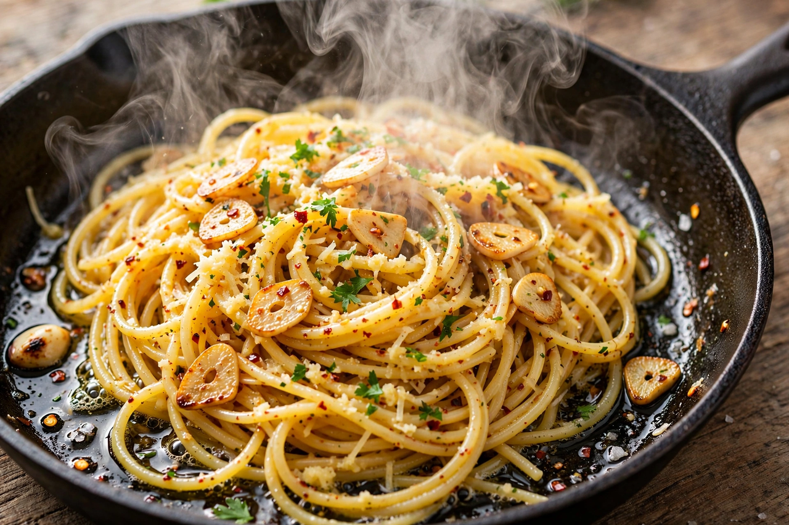
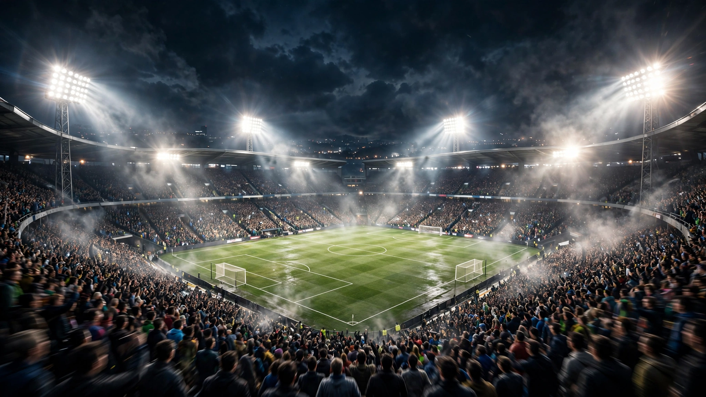
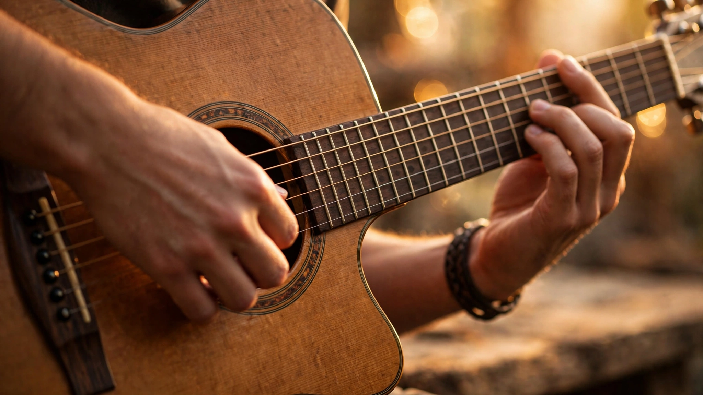
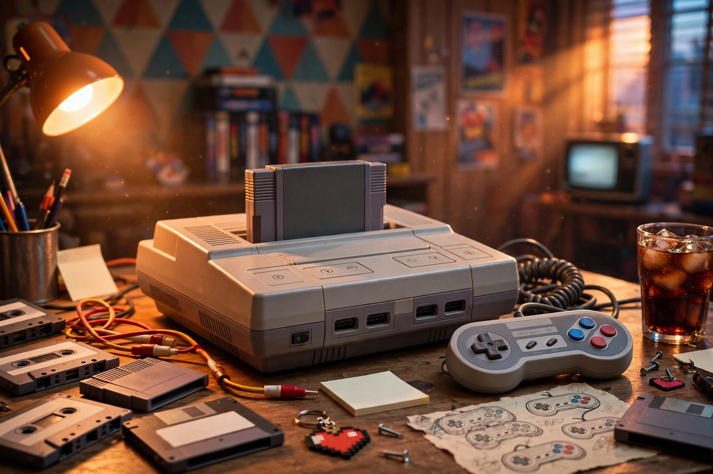
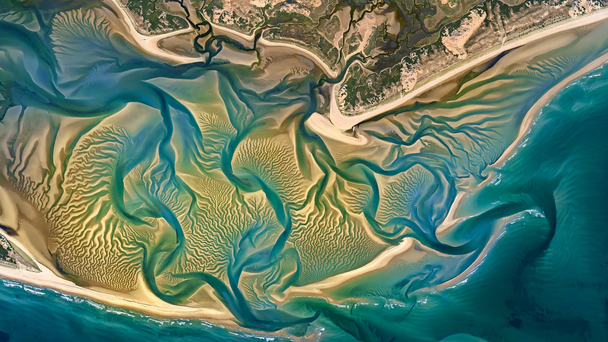

🏠 Home
▶ Shorts
📺 Subscriptions
History
Playlists
Watch Later
Liked videos
Explore
Trending
Music
Gaming
News
Sport
Article: Wikipedia

Sizzling pan of pasta
15-minute garlic pasta anyone can make
Football stadium at night
Extended highlights: a dramatic late comeback
Acoustic guitar close-up
Lo-fi guitar session — one hour, no talking
Retro game console
The story of the console that changed gaming
Satellite view of a coastline
How tides actually work